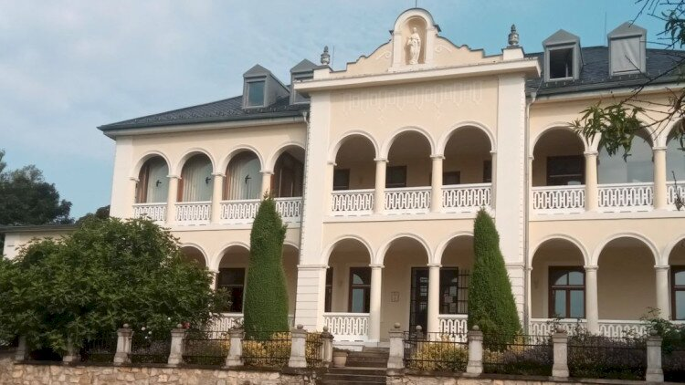
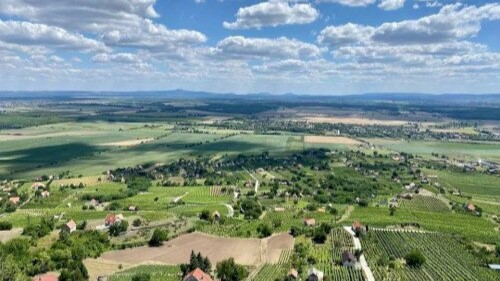

Fedezd fel a vulkánok és a levendula birodalmát: A Balaton-felvidéki Nemzeti Park!
Gondoltál már arra, milyen lehet egy olyan tájon kalandozni, ahol az egykori tűzhányók bazaltorgonái bástyaként magasodnak a szőlősorok felett, a föld alatt egy kéklő barlangban csónakázhatsz, a domboldalakon pedig lila levendulatenger illata száll a balatoni szélben? A Balaton-felvidéki Nemzeti Park hazánk egyik legnépszerűbb és legsokszínűbb védett területe, amelyet 1997-ben alapítottak. Ez a közel 57 ezer hektáros vidék a Balaton északi partján húzódik, magában foglalva a Bakony déli lankáit, a Tapolcai-medencét és a Kis-Balaton misztikus mocsárvilágát. Ez a park a geológiai csodák, a prémium borvidékek és a toszkán hangulatú medencék találkozóhelye, amely azonnal elvarázsol, és kiszakít a rohanó mindennapokból.
Tihany és a Keleti-Medence (A levendula és a gejzírek földje)
Ahol a Balaton kékje találkozik a gejzírkúpok fehér szikláival és a lila levendulamezőkkel. Ez a félsziget a park leglátogatottabb kultúrtörténeti és botanikai ékköve.
Állandó látnivalók
A Belső-tó partján álló modern, interaktív ökoközpont. Zseniális kiállítása és látványos 3D-s filmje segítségével megismerheted a Tihanyi-félsziget évmilliókkal ezelőtti, dühöngő vulkáni múltját, a gejzírek születését és a híres tihanyi levendula termesztésének, feldolgozásának történetét. Az udvaron gyógynövénykert és kézműves foglalkozások várják a családokat.
A félsziget legkülönlegesebb geológiai formációi. A vulkáni utóműködés során feláramló forró hévizek mész- és kovatartalmú sziklákat építettek a felszínen. A legnagyobb és leglátványosabb kúp az Aranyház, amely a rajta megtelepedett sárga zuzmókról kapta a nevét, és napsütésben vakítóan aranyló színben tündököl.
A Balatonfüred határában található, gyönyörűen kiépített mészkőbarlang modern fogadóépülettel egészült ki. A barlang belső, látványos rétegződésű sziklafalai kényelmes, villanyvilágítással felszerelt sétán járhatók be, a felette lévő interaktív tanösvény pedig a Tamás-hegyi kilátóhoz vezet.
A Keszthelyi-hegység keleti peremén fekvő, fokozottan védett barlang, amely kizárólag a nemzeti park által szervezett, overálos-fejlámpás kalandtúrák keretében látogatható. Itt nincsenek kiépített betonutak és világítás, valódi kúszós-mászós barlangász élmény várja a kalandvágyókat.
Csopakon található a Balaton-felvidéki Nemzeti Park Igazgatóság központi bázisa. Az épület melletti Plébános-kertben egy bámulatos, ingyenesen látogatható geológiai bemutatóhely és egy tanösvény működik, amely a Balaton-felvidék jellegzetes kőzeteit és ritka növényvilágát mutatja be. Ideális egy gyors, tartalmas megállóra a strandolás mellett.

Balaton-felvidéki Nemzeti Park Igazgatóság székháza Forrás: www.bfnp.hu

Balaton-felvidéki Nemzeti Park Forrás: www.bfnp.hu
A Déli-Bakonyban található, fokozottan védett régészeti és barlangtani ritkaság. Ez a triász időszaki mészkőben kialakult barlang nem egy klasszikus, kiépített sétálóhely, hanem a kalandvágyók birodalma: kizárólag a nemzeti park által szervezett, overálos-fejlámpás kalandtúrák keretében látogatható, ahol igazi barlangászként, szűk hasadékokon át kúszva-mászva fedezheted fel a föld alatti járatokat és az őskori ember egykori menedékét.
Egy elképesztő geológiai időutazás Várpalota határában. Az egykori homokbánya védett fala a hajdani miocén időszaki, meleg vizű tenger (a Pannon-tenger őse) partszegélyi üledékeit őrizte meg szinte tökéletesen. A finom homokrétegekben sétálva elképesztő sűrűségben, szabad szemmel láthatók a több millió éves megkövesedett tengeri csigák, kagylók és cápafogak fosszíliái.
Várpalotai Homokbánya Természetvédelmi Terület Forrás: www.bfnp.hu
Szezonális rendezvények
Ezen az országos héten a Levendula Ház és a Lóczy-barlang ünnepi fokozatba kapcsol: félárú belépőkkel, szakvezetett vulkántúrákkal és éjszakai barlangolásokkal várják az utazókat.
Magyar Nemzeti Parkok Hete Forrás: www.bfnp.huMagyar Nemzeti Parkok Hete Forrás: www.bfnp.hu
A Balaton-felvidék abszolút legnépszerűbb nyári csúcseseménye! Amikor a félsziget lila ruhát ölt, heteken át minden a levenduláról szól. A nemzeti park saját ültetvényein bárki arathat magának az illatos virágból, a faluban pedig levendulás kézműves vásár, koncertek és különleges gasztronómiai csodák (levendulás sör, fagyi és sütemények) várják a turistákat.
A Tapolcai-medence és a Tanúhegyek (A bazaltorgonák és a föld alatti vizek)
A hajdani Pannon-tenger mélyéből született, megkövült vulkánok birodalma. Az aktív bakancsos túrák, a sziklamászások és a prémium borászatok fellegvára.
Állandó látnivalók
Magyarország egyik legkülönlegesebb és legizgalmasabb turisztikai attrakciója. A város házai alatt húzódó barlangrendszerben a meleg és hideg karsztvizek keveredése egy kéklő, tiszta vizű föld alatti tórendszert hozott létre. A modern látogatóközpont interaktív, 3D-s kiállítása után következik az igazi kaland: saját magad evezhetsz és csónakázhatsz a szűk, misztikusan kivilágított föld alatti sziklafolyosókon!
A leghíresebb és legnagyobb tanúhegyünk. A meredek hegyoldalban, a szőlőbirtokok felett magasodnak a gigantikus, függőleges, orgonasípokra emlékeztető bazaltoszlopok, amelyeket a kihűlő láva formált. A hegytetőn lévő Kisfaludy-kilátóból nyílik a Balaton egyik legfenségesebb panorámája.
Sokan a legszebb tanúhegynek tartják. Itt láthatók hazánk legarányosabb és legmonumentálisabb, közel 30 méter magas bazaltorgonái. A hegy északi oldalán található a különleges Jégbarlang (egy bazalttörmelék közötti hasadék), amelyből nyáron is jéghideg, 0 fok körüli levegő áramlik ki.
A Káli-medence kapujában, Salföld szélén található ez a bámulatos hagyományőrző major. Egy működő mintagazdaságban ismerheted meg a régi magyar háziállatfajokat (szürkemarhák, bivalyok, rackajuhok, mangalicák). Az udvaron fenséges lovasbemutatók és pásztorkutyás terelések szórakoztatják a látogatókat, sőt lovaskocsizásra is be lehet fizetni a Káli-medence kőtengerei közé.
Egy félbevágott vulkáncsúcs! Az egykori kőbányászat miatt a hegy egyik oldala teljesen eltűnt, így láthatóvá vált a vulkáni kürtőben megdermedt, függőleges, sokszögletű bazaltoszlopok lenyűgöző belső szerkezete. A helyszínen működő kiállítás mellett egy lépcsősor vezet a hegy tetejére, ahonnan a Káli-medence teljes panorámája eléd tárul.
A park egyik legmisztikusabb geológiai látnivalója. Az egykori Pannon-tenger part menti turzásainak megkeményedett homokkőtömbjei a szél és a víz munkája nyomán bizarr sziklaformákká alakultak. A szentbékkállai kőtenger leghíresebb pontja az Ingókő: egy óriási sziklapad, amelynek a szélére állva a kőtömb láthatóan megmozdul a talpad alatt.
A Káli-medence szívében található bemutatóhely, amely a vidék híres, természetes ásványvizeinek, forrásainak és a vulkanikus altalajnak a kapcsolatát mutatja be.
Gyenesdiás határában található ez a hatalmas területű, közkedvelt élménypark és vadaspark, amely szintén a nemzeti park felügyelete alá tartozik. A látogatók itt közvetlen közelről ismerhetik meg a hazai nagyvadfajokat (gímszarvasokat, dámvadakat, vaddisznókat, őzeket), valamint a régi magyar háziállatokat. A parkban egy interaktív, modern természetismereti látogatóközpont is működik óriási játszótérrel, így a gyermekes családok egyik első számú balatoni célpontja.
A Csodabogyós-barlang bázisának közvetlen szomszédságában található ez a rejtélyes, elhagyatott történelmi épület. Bár a kastély belső terei biztonsági okokból zárva vannak, a nemzeti park által gondozott, hatalmas és vadregényes kastélypark az év bármely szakában szabadon és ingyenesen látogatható egy kellemes, árnyas erdei sétára.
A Magas-Bakony szívében fekvő, csúcstechnológiás csillagászati látogatóközpont. Egy hatalmas, interaktív űrkutatási és távcsőtörténeti kiállítás után Közép-Európa egyik legmodernebb digitális planetáriumában élvezhetsz monumentális 3D-s filmeket, a kupolában elhelyezett óriási naptávcsövekkel pedig nappal a Nap kitöréseit, a rendszeres éjszakai programokon pedig a fényszennyezés-mentes bakonyi égbolt galaxisait és bolygóit fürkészheted.
Közvetlenül a csillagda szomszédságában található, rendkívül modern természetismereti bemutatóhely. A kiállítás játékos és élményszerű módon, interaktív fatapogatókkal, hanghatásokkal és makettekkel vezeti be a családokat a bakonyi erdőgazdálkodás, a vadászat és a sűrű lombkoronák rejtett élővilágának, madarainak és nagyvadjainak titkaiba.
A Keszthelyi-hegység völgyében bújik meg ez a bámulatos, ipartörténeti műemlék vízimalom, amelyet egykor a falun átfolyó patak vize hajtott. A nemzeti park által gyönyörűen helyreállított és működőképes épületben berendezett kiállításon megnézheted az óriási, zakatoló alulcsapós vízkeréket, az őrlőszerkezeteket, és megismerheted a hajdani békés molnárélet mindennapi fortélyait és eszközeit.
A tanúhegy legfontosabb, fergeteges nyárindító fesztiválja, amely egy pezsgő éjszakai banzáj. Sötétedés után a présházak és szőlősorok ünnepi fénybe öltöznek, a rejtett kispincék udvarain pedig akusztikus koncertek és DJ-szettek szórakoztatják a táncoló tömeget. Fiatalos, pörgős csúcsesemény, ahol a prémium borok élvezetét a holdfényes bulizás és a nemzeti park éjszakai geológiai sétái teszik teljessé.
A nyári pörgés tökéletes, lelassult kora őszi ellenpontja, amely szigorúan sötétedéskor véget ér. A hangos koncertek helyett itt a kényelmes, pokrócos piknikezésen, a dűlőtúrákon, a komolyabb borkóstolókon és a prémium gasztronómián van a hangsúly. Kiváló család- és kutyabarát program azoknak, akik a lágy őszi napsütésben, tömeg nélkül élveznék a vulkanikus táj nyugalmát.
A borvidék legnagyobb őszi ünnepe. A tanúhegy szoknyáján elterülő pincék megtelnek élettel, az ország leghosszabb szüreti felvonulása mellett pedig a nemzeti park geológiai túrákat indít a bazaltorgonákhoz, így a prémium borozást tökéletesen össze lehet kötni a természetjárással.
A Misztikus Kis-Balaton (A nádas labirintusok és a madárparadicsom)
A park legdélebbi és legszigorúbban védett vizes élőhelye. A sűrű nádasok, a kócsagcsordák és a nemzetközi jelentőségű madárvonulások érintetlen szentélye.
Állandó látnivalók
A Sármellék és Fenékpuszta között található, modern, zöldtetős ökoközpont. Egy hatalmas, interaktív kiállításon és mozitermen keresztül mutatja be a Kis-Balaton rejtett mocsárvilágát. A tetőterén lévő kilátóból pazar panoráma nyílik a tájra, az udvarról pedig napelemes kishajós túrák indulnak a sűrű nádasok mélyére.
A Kis-Balaton egyetlen olyan területe, amely előzetes engedély és szakvezetés nélkül, teljesen szabadon látogatható az év bármely napján! A szigetre egy ikonikus, háromíves fahídon átkelve juthatsz be. A szigeten két hatalmas madármegfigyelő torony, játszótér és pihenőhelyek várják a családokat.
Magyarország legnagyobb látogatható bivalycsordájának otthona. A bemutatóhelyen egy kényelmes sétaút mentén, közvetlen közelről csodálhatod meg a sárban dagonyázó, tekintélyes bivalyokat és a fürge ürgéket. Az istállóban régi fotókiállítás és pásztoreszközök kaptak helyet.
A magyar irodalom egyik kultikus helyszíne. Itt áll a Tüskevár írójának, Fekete Istvánnak az egykori nádfedeles kunyhója (a Matula-kunyhó), valamint a Kis-Balaton élővilágát bemutató emlékház. (Fontos szabály: a Diás-sziget szigorúan védett terület, kizárólag a Kis-Balaton Látogatóközpontból induló, hivatalos nemzeti parki szakvezetett túrákon látogatható szárazföldön vagy kenuval!)
Fekete István emlékhely és a Matula-kunyhó Forrás: www.likebalaton.huFekete István emlékhely kiállítása Forrás: www.bfnp.hu
A Kis-Balaton déli kapujában, Vörs faluban található, 18-19. századi nádfedeles, füstöskonyhás parasztház. Belépve a hajdani lápvidéki ember mindennapi eszközeit, a pákászatot, a csíkászatot és a halászat ősi fogásait ismerheted meg egy fantasztikus néprajzi kiállításon.
A Balaton déli partján elterülő Nagyberek és Ordacsehi-berek kapujában található modern ökoközpont. Egy csodálatos interaktív kiállításon keresztül mutatja be a déli part hajdani hatalmas mocsárvilágát, a nádtengerek rejtett madárfészkeit, a mocsári teknősök védelmét, a falak közül kilépve pedig közvetlen szakvezetett berekjáró túrákra indulhatsz a vizenyős rétek közé.
A nemzeti park legnyugatibb, Zala megyei nyúlványa, ahol a kanyargó Mura folyó ártéri világa húzódik. Ez a hangulatos vízi bázis a csendes evezések és kajaktúrák kiindulópontja, ahonnan engedéllyel rendelkező szakvezetők kíséretében evezhetsz be a rejtett holtágakba és a sűrű galériaerdők közé, hogy testközelből fedezd fel a névadó európai hódok monumentális hódvárait és rágásnyomait a part menti fákon.
Online jegyvásárlás kötelező: A Tapolcai-tavasbarlangba a helyszínen szinte esélytelen jegyet kapni, a helyek hetekkel előre betelnek! Minimum 2-3 héttel az utazás előtt online vegyétek meg a fix időpontra szóló jegyet a nemzeti park honlapján.
Kis-Balaton korlátozások: A Kis-Balaton belső területeire (a Kányavári-sziget kivételével) autóval vagy gyalogosan egyénileg behajtani szigorúan tilos és komoly bírsággal jár! Minden túrát a Látogatóközpontban hirdetett hivatalos túrákra alapozz.
Hegyestű lépcsők: A monoszlói Hegyestű kilátópontjához vezető lépcsősor rendkívül meredek. Kisgyerekekkel vagy nehezebben mozgóknak a hegy lábánál lévő kőparkot és kiállítást ajánlott, a csúcsra csak megfelelő zárt cipőben mássz fel.
A Balaton-felvidéki Nemzeti Park nem csupán egy védett terület a térképen – ez a harmonikus toszkán életérzés és a drámai természeti erők tökéletes találkozása. A Tapolcai-tavasbarlang kéklő vizén való csónakázás, a Badacsony óriási bazaltorgonáinak hűvöse és a tihanyi levendula illata a lemenő nap fényében olyan mély, megnyugtató élményt nyújtanak, ami pillanatok alatt kikapcsolja a mindennapi stresszt.
További információkért keresd fel a Balaton-felvidéki Nemzeti Park hivatalos oldalát: www.bfnp.hu